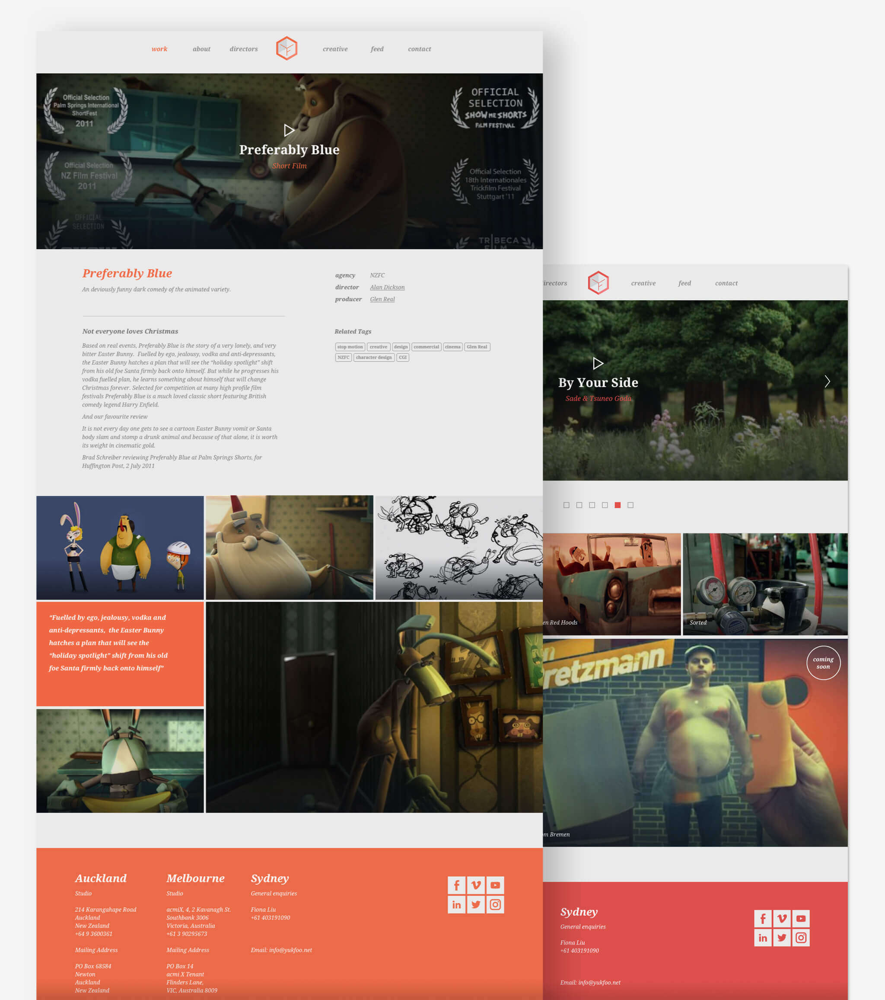

Animation facility and production company
Yukfoo
UX/UI , Branding, Coding Prototypes
Yukfoo are a NZ/Aus animation company with cutting edge work and at the time had a very outdated website. Our task was to come up with something fresh that would showcase their collection of animation videos. Yukfoo came to us with a few design ideas from their graphic designer and it was my job to interpret these and create something which would look good and function well on screen.
My role in this project not only covered the design aspect, I also spent some time coding responsive prototypes which were used in the final website.
I worked closely with the client and back-end developer and felt I learnt a lot from this experience.

